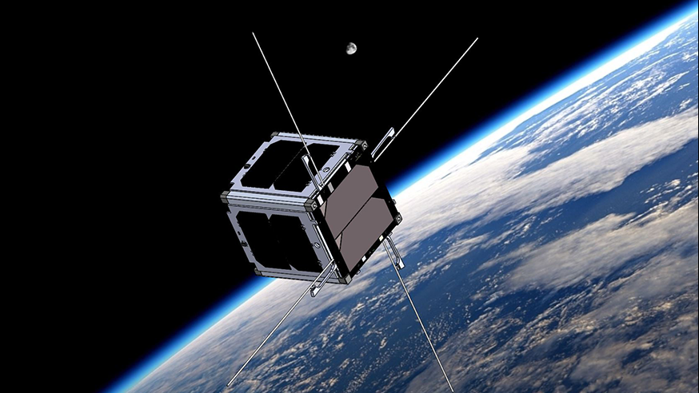
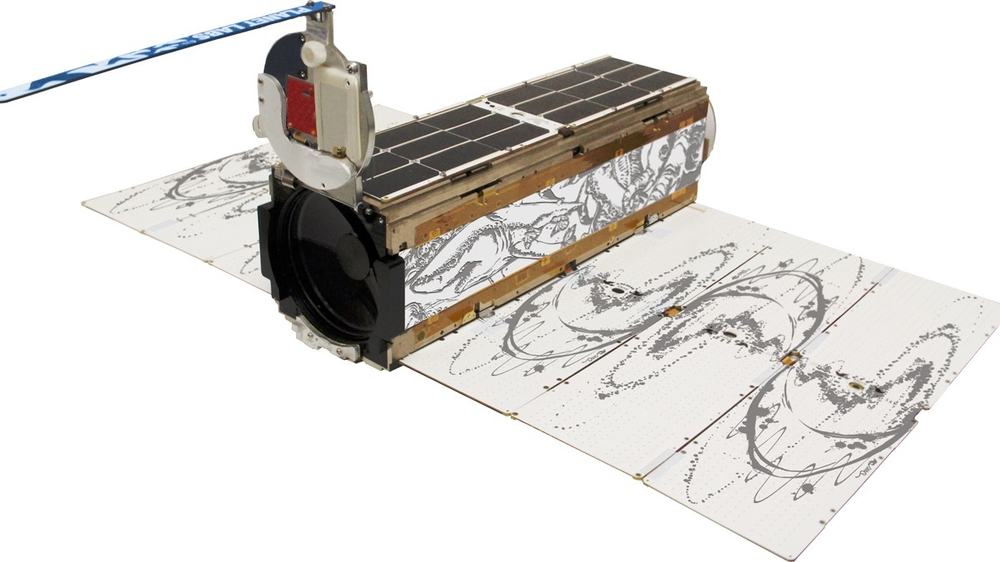

Notable CubeSats in History

The first CubeSat was launched in 2003, and the first NASA CubeSat was GeneSat-1 – launched in 2006. GeneSat-1’s success was an important factor in the increase of CubeSat popularity.
Some Notable Missions:
- Doves (Planet): Planet has a constellation of hundreds of 3U imaging satellites. They are able to take images with resolutions of about 72 cm spatial resolution – that’s less than 1m per pixel! Planet has shown the commercial viability of this class of satellite, even when the quantity of satellites in orbit vastly out numbers the amount of employees that operate them.
- GeneSat-1 (NASA): Launched in 2006, this self-contained space biology mission studied how the space environment impacted common proteins. This mission also showed the potential for CubeSats!
- MARCO (NASA): Mars Cube One (MARCO) was actually a mission with two CubeSats, MARCO-A and MARCO-B. These two 6U’s served as companions for the Mars Insight lander which launched in Spring 2018 and landed on Mars in late November that same year. The MARCO mission was to test the feasibility of deep-space CubeSats, and to act as a communication relay between the Deep Space Network and the Insight lander. These two CubeSats successfully performed their mission and have now opened up a new realm of opportunities for deep-space missions in the future!

Doves(Planet)
GeneSat-1 (NASA)
MACRO (NASA)


 SpaceCube Mission
SpaceCube Mission